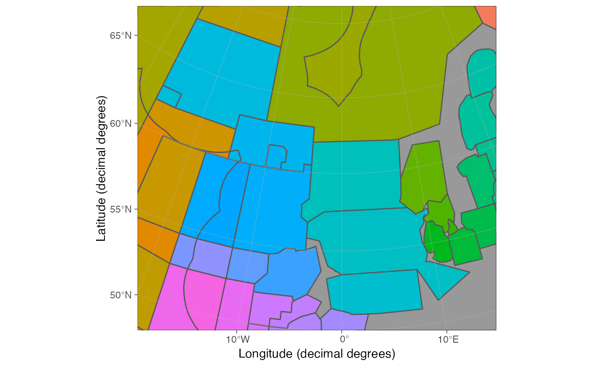

Move basemap land, glacier and grid layers on top of other ggplot layers
Source: R/reorder_layers.R
reorder_layers.RdMoves existing land, glacier and grid layers on top of other layers. Useful for hiding region polygons under land.
Arguments
- p
ggplot object from the
basemapfunction.
See also
Other customize shapefiles:
auto_limits(),
theme_map()
Examples
if(requireNamespace("ggspatial", quietly = TRUE)) {
# \donttest{
data("ices_areas")
p <- basemap(c(-20, 15, 50, 70)) +
ggspatial::annotation_spatial(ices_areas, aes(fill = Area_Full), show.legend = FALSE)
# Polygons on top of land
p
# Move land on top
reorder_layers(p)
# }
}
